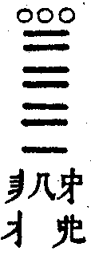

嘉興大藏經 第38冊
No.B407 千山剩人禪師語錄 (6卷)
【明 函可說 元賦等編 今羞等錄 今盧．今又重梓（依駒本印）】
第 6 卷
千山剩人和尚語錄卷之六
拈古
世尊與阿難行次見一古佛塔，世尊便作禮。難云：「此是甚麼人塔？」世尊云：「此是過去諸佛塔。」難云：「過去諸佛是什麼人弟子？」世尊云：「是吾弟子。」
拈云：「過去諸佛是世尊弟子，且道世尊是什麼人弟子？個裡見得，堪與諸佛為師。」
忠國師因紫璘法師云：「請禪師立義某甲破，某甲立義禪師破。今請師立義。」師云：「立義已了。」紫云：「是甚麼義？」師云：「果然不見。」
拈云：「若作法師，待云『立義已了』，便道『破也破也』。」
南泉因座主來辭乃問：「甚處去？」主云：「山下去。」泉云：「第一不得謗王老師。」主云：「爭敢謗和尚。」泉乃噴涕云：「是多少？」主便出。
拈云：「者座主不妨伶俐，可惜爪牙未具。當時見道『第一不得謗王老師』，便向道『合取狗口』。」
有僧於馬祖前作四畫，上一畫長、下三畫短，云：「不得道一畫長、三畫短，請師答。」師乃畫一畫，云：「不得道長短，答汝了也。」
拈云：「騎賊馬趕賊，奪賊刀殺賊。馬大師慣得其便，要且無定亂先圖。若是老僧，見伊畫四畫時便向道『野狐精識得汝也』。」
金牛因臨濟來乃橫按拄杖方丈前坐，濟遂拊掌三下歸堂去。牛卻下去人事了便問：「賓主相見，各有軌儀。上座何得無禮？」濟云：「道甚麼？」牛擬開口，濟便打一坐具，牛作倒勢，濟又打一坐具，牛云：「今日不著便。」
拈云：「人盡道臨濟不合上門欺人，殊不知臨濟被金牛一坐，直至於今起不得。」
龐居士坐次問靈照云：「古人道：『明明百草頭，明明祖師意。』你作麼生？」照云：「老老大大作者語話。」士云：「你作麼生？」照云：「明明百草頭，明明祖師意。」
拈云：「龐老前行不到，女子末後太過。有人辨得，許你具一隻眼。」
趙州與文遠論義鬥劣不鬥勝，勝者輸胡餅，遠云：「請和尚立義。」州云：「我是一頭驢。」遠云：「我是驢胃。」州云：「我是驢糞。」遠云：「我是糞中蟲。」州云：「你在彼中作什麼？」遠云：「我在彼中過夏。」州云：「把將胡餅來。」
拈云：「今人鬥勝不鬥劣，古人鬥劣不鬥勝。老僧▆特拈出，普示關東僧眾。若無如此規則，胡餅爭得到老僧口裏？」
汾陽昭示眾云：「識得拄杖子，行腳事畢。」泐潭澄云：「識得拄杖子，入地獄如箭射。」
拈拄杖云：「者個是千山斫來底，有甚麼難識？你等諸人識得也未？若不識，孤負平生行腳。若識，又道入地獄如箭射。」良久卓一卓云：「老僧足力衰竭，遠步少他不得。」
曉愚禪師到五祖戒和尚處，戒問：「不落唇吻一句作麼生道？」師云：「老老大大，話頭也不照顧？」戒便喝，師亦喝，戒拈棒，師拍手下去，戒云：「闍黎闍黎，且住話在。」師將坐具搭肩上，更不回首，直出去。
拈云：「一個如龍得水，一個似虎靠山。簡點將來，二俱不了。且道甚處見他不了？有人辨得，老僧性命在汝手裡。」
藥山因僧問：「己事未明，乞師指示。」師良久云：「吾今為汝道一句亦不難，只宜汝於言下便見去猶較些子，若更思量，卻成吾罪過。不如且各合口，免相累及。」
拈云：「且道藥山當時是為者僧道不為者僧道？」良久云：「一言既出，駟馬難追。」
藥山向手中書一「佛」字，問道吾：「是甚麼？」吾云：「佛字。」山云：「這多口阿師。」
拈云：「汝道道吾當日不道佛字得麼？不道佛字又合道甚麼字？」良久云：「識取鉤頭意，莫認定盤星。」
藥山問僧：「年多少？」僧云：「七十二也。」師云：「是年七十二那？」僧云：「是。」師便打。
拈云：「汝道者僧有喫棒分也無？為甚便打？若有，過在甚處？據老僧看來，盡天下僧俗凡聖、艸木叢林，盡須擔枷帶鎖始得。」
僧問石霜：「咫尺之間，為甚不睹師顏？」師云：「我道偏界不曾藏。」僧後問雪峰：「偏界不曾藏意旨如何？」峰云：「什麼處不是石霜？」僧回舉似師，師云：「者老漢有什麼死急。」
拈云：「雪峰道『什麼處不是石霜』與石霜道『偏界不曾藏』，是一般是兩般？當時若問老僧『遍界不曾藏意旨如何』，便向道：『者老漢有什麼死急。』」
雲居禪師問僧：「念什麼經？」僧云：「《維摩經》。」師云：「我不問你《維摩經》，念底是什麼經？」僧因此有省。
拈云：「既不是《維摩經》，又別有甚麼念底經？」良久云：「如是我聞。」
拈云：「雪竇道：『前五棒日照天臨，後五棒雲騰致雨。』恁麼判合該五棒。東禪道：『前五棒打者僧禮，拜後五棒打者僧無過。』恁麼判也合該五棒。若據老僧看來，前五棒棒棒見血，後五棒一棒也打不著。具眼者辨看。」
金峰因僧侍次乃云：「舉一則因緣，汝第一不得亂會。」僧云：「請和尚舉。」峰豎起拂子，僧良久，峰云：「知道闍黎亂會。」僧以目視東西峰云：「雪上加霜。」
拈云：「金峰不合平地生堆，者僧又復逆風揚土。當時若見道『舉一則因緣，汝第一不得亂會』，便掩耳疾趨而出。」
雲門因一僧罷經論來參多時乃云：「未到雲門時恰似初生月，及乎到後曲灣灣地。」門得知乃舉問：「是你道不？」僧云：「是。」門云：「甚好。吾問汝，作麼生是初生月？」僧乃斫額作望月勢，門云：「你如此已後失卻目在。」後此僧果然失目。
拈云：「今人盡道者僧不合詆雲門，被雲門授記，果然失目，殊不知者僧至今光明炯炯地？」
舜禪師每訶罵薦福說葛藤禪，一日聞懷遷化，於法堂上合掌云：「且喜葛藤樁子倒了也。」
拈云：「當日兩老同出隻手，時人往往作是非人我會。不如此爭見肺腹？老僧於今要尋些葛藤禪合藥。」
長髭到石頭處，頭問：「什麼處來？」髭云：「嶺南來。」頭云：「大庾嶺頭一鋪功德還成就也未？」髭云：「成就久矣，只欠點眼。」頭云：「莫要點眼麼？」髭云：「便請。」頭垂下一足，髭便禮拜，頭云：「見什麼道理便禮拜？」髭云：「如紅爐上一點雪。」頭便休。
拈云：「汝眼本正，因師故邪。老僧也從嶺南來，若遇人問『大庾嶺頭一鋪功德成就也未』，直向道：『斬絕了也。』」
巖頭參德山，跨門便問：「是凡是聖？」德山便喝，巖頭便禮拜。洞山聞舉：「云若不是奯公，大難承當。」巖頭云：「洞山老漢不識好惡。我當時一手抬、一手搦。」
拈云：「跨門便問，已是不著便；德山便喝，令行一半；巖頭便拜，不是好心；洞山云云，也是承虛接響。巖頭道『不識好惡』，錯下名言。『我當時一手抬、一手搦』，試道甚麼處是一手抬、一手搦處？」
雪峰示眾云：「望州亭與你相見了也，烏石嶺與你相見了也，僧堂前與你相見了也。」保福問鵝湖：「僧堂前且置，望州亭、烏石嶺什麼處相見？」鵝湖驟步歸方丈，保福便入僧堂。
拈云：「且道二老宿與雪峰相見也未？雖然，要見二老宿則易，要見雪峰則難。老僧今日卻道：『地獄裏與你相見了也，餓鬼裡與你相見了也，畜生裡與你相見了也。』若有個漢出來道：『除卻三途，什麼處不相見？』我且問你，東廁一堆灰重多少？」
玄沙與地藏在方丈說話。夜深，沙云：「侍者關隔子門，汝作麼生出得？」地藏云：「喚什麼作門？」
拈云：「地藏雖然不負來機，要且出身無路。若是老僧，喚侍者點一杯茶來。」
趙州一日在佛殿上見文遠禮佛，以拄杖打一下，遠云：「禮佛也是好事。」州云：「好事不如無。」
拈云：「文遠機頭織錦，趙州又向錦上敷花。若是老僧見人禮佛，但合掌云：『功德無量。』與趙州是同是別？」
臨濟見僧來，豎起拂子，僧禮拜，濟便打，又見一僧來，亦豎起拂子，僧不顧，濟亦打。
拈云：「傾乾一大海水，魚龍何處藏身？燒盡大須彌山，虎兕無由躲命。咄，急急如律令。」
雪峰示眾云：「三世諸佛在火燄裡轉大法輪。」玄沙云：「火燄為三世諸佛說法，三世諸佛立地聽。」
拈云：「雪峰已是白日見鬼，玄沙又是鬼見白日，每人合喫三十棒。且喜不干火燄事。」
僧問巴陵：「如何是道？」陵云：「明眼人落井。」僧問石頭：「如何是道？」頭云：「木頭。」僧又問韶國師：「如何是道？」師云：「四生浩浩。」
拈云：「古人出語，實不徒然。比如問頭一般，答語各別。其中一人超佛越祖，一人佛祖齊肩，一人拖帶佛祖入地獄。具透關眼者，不妨仔細辨看。辨得，老僧拄杖子分付與你；辨不得，切忌誣謗先德。」
一婆子供養一僧，一日遣女子抱住云：「正當恁麼時如何？」僧云：「枯木倚寒岩，三冬無煖氣。」女子回舉似婆，婆云：「二十年止供養一個俗漢。」遂趕出，燒卻菴。
拈云：「莫守寒岩異草青，坐斷白雲宗不妙。多少人作此會？慚惶殺人。要會個僧麼？有意氣時添意氣。要會婆子麼？不風流處也風流。」
頌古
世尊四十九日在忉利天為母說法，及辭天界下時，四眾八部俱往空界迎。有蓮花色比丘尼作念云：「我是尼身，必居大僧後見佛。不如用神力變作轉輪聖王，千子圍繞。」最初見佛，果滿其願。世尊纔見乃訶云：「蓮花色比丘尼，汝何得越大僧見吾？汝雖見吾色身，且不見吾法身。須菩提岩中宴坐，卻見吾法身。」
師云：「且道色身外別有法身、法身外別有色身耶？老瞿曇既已欺他女子，又復誣彼比丘。若據老僧看來，須菩提與蓮花色比丘尼總未曾夢見佛身在。」
頌曰：「漢武求仙不得仙，王喬端坐卻昇天。寶階斷後空岩寂，滿塞黃煙夾暮煙。」
世尊一日敕阿難：「食時將至，汝當入城持缽。」阿難應諾。佛云：「汝既持缽，須依過去七佛儀式。」阿難便問：「如何是過去七佛儀式？」佛召阿難，難應諾。佛云：「持缽去。」
師云：「有人道：『世尊如是召，阿難如是應，何等分明？』恁麼會還得也無？既已不許恁麼，畢竟如何是七佛儀式？速道速道。道得，不妨破瓦碗喫飯，不然，雖終日持缽，與破瓦碗何別？」
頌曰：「赤骨律，饑便要餐飽則不，東家打餅西家茶，管他七佛非七佛。」
世尊因耆婆善別音響，至一塚間見五個髑髏，乃敲一髑髏問耆婆：「此生何處？」耆云：「生人道。」世尊又敲一云：「此生何處？」耆云：「生天道。」世尊又別敲一云：「此生何處？」耆罔知生處。
師云：「耆婆非但第三個不知生處，先答生人、生天早錯了也。若作耆婆，待世尊打頭問『此生何處』，但叉手云：『深領此問。』」
六祖初參黃梅，梅問：「你自何來？」祖云：「嶺南。」梅云：「欲須何事？」祖云：「唯求作佛。」梅云：「嶺南人無佛性，若為得佛？」祖云：「人有南北，佛性豈然？」
師云：「若作祖師，纔見道『嶺南人無佛性，若為得佛』，便禮拜云：『謝師授記。』」
頌曰：「問處分明答處親，欲求作佛枉勞神。自傳衣缽重遭屈，直至於今不得伸。」
六祖因僧問：「黃梅意旨甚麼人得？」祖云：「會佛法人得。」僧云：「和尚還得不？」祖云：「我不得。」僧云：「和尚為甚不得？」祖云：「我不會佛法。」
師云：「道會佛法，頭上安頭；道不會佛法，又是斬頭求活。畢竟如何得黃梅意旨聻？」以拄杖趕散。
頌曰：「會與不會何交涉？黃梅意旨少人知。請看樹上金衣子，又喚春風過別枝。」
佛陀波和尊者游臺山見一老人問：「向甚處去？」者云：「臺山禮文殊去。」老人云：「大德見文殊還識不？」者無對。
師云：「當時若見恁麼道，但云：『祗如文殊還識某甲也無？』」又云：「文殊文殊。」
頌曰：「文殊豈有二文殊？尋到臺山也大迂。昨夜雪晴雲破處，一鉤新月小空虛。」
趙州問：「座主講甚麼經？」主云：「《涅槃經》。」州云：「問大德一段義得不？」主云：「問甚麼義？」州以腳趯空一趯，吹一吹，云：「者個是什麼義？」主云：「經中無此義。」州云：「脫空謾語漢。此是五百力士揭石義。」
師云：「且道是此義不是此義？座主若具眼，待渠問『這個是甚麼義』，但向道：『少賣弄。』或云：『久知和尚有此機關。』不特勘破趙州，免令錯下註腳。」
頌曰：「口裡無牙，腳底無筋。趙州老漢，少喜多嗔。」
趙州問僧：「發足甚處？」僧云：「雪峰。」州云：「雪峰有何言句示人？」僧云：「尋常道：『盡十方世界是沙門一隻眼，你等諸人向甚處屙？』」州云：「闍黎若迴，寄個鍬子去。」
頌曰：「對面不相識，千里卻同風。若無河北輪刀手，誰解幫扙老雪峰？」
紫湖門下立牌，牌上書云：「紫湖有狗，上取人頭，中取人腰，下取人腳。擬議則喪身失命。」有新到纔相看，湖便喝云：「看狗。」僧纔回首，湖便歸方丈。
師云：「紫湖可謂老婆心切，爭奈無人捨命？」李居士請師於看狗處下語，師直前一摑。又云：「幸是老僧。」又云：「業畜不得無禮。」又於地上作[○@犬]相，隨以腳抹卻。又以手舉腰帶云：「個是五百文買底。」
睦州因秀才相看云：「會二十四家書。」州以拄杖空中點一點云：「會麼？」秀才罔措。州云：「又道會二十四家書，永字八法也不識。」
師云：「睦州者一點，莫道秀才家，便是佛來也不敢正眼覷著。」又云：「如蟲禦木。」
葉縣省禪師問僧云：「日暮投林，朝離何處？」僧云：「某甲不曾學禪。」師云：「生身入地獄。」
楚圓禪師冬日榜示，僧堂前作此相。若人識得，不離四威儀中。
師云：「當時若見，脫草鞋蘸水向上一擦。」
頌曰：「天皇皇，地皇皇，我家有個夜啼郎。往來君子讀一遍，安眠穩睡到天光。」
九峰在石霜為侍者。因普會遷化，眾舉首座住持。峰云：「須明得先師意始可住。」遂問先師道：「如古廟香爐去，冷湫湫地去，如一條白練去，口邊生醭去。首座作麼生會？」座云：「明一色邊事。」峰云：「未會先師意在。」座云：「裝香來。我若不會先師意，香煙起時脫去不得。」及至香煙纔起，首座脫去。峰乃於背上撫云：「坐脫立亡則不無，先師意未夢見在。」
南泉：「不是心，不是佛，不是物。」
師云：「不是不是。」
楊岐和尚問僧：「栗棘蓬作麼生吞？金剛圈作麼生跳？」
師拍手三下云：「奈我何奈我何？」
頌曰：「栗棘蓬誰吞？金剛圈誰跳？明珠赤珊瑚，村郎都不要。為甚不要？雞鳴天曉。」
僧問龍牙：「二鼠侵藤時如何？」牙云：「須知有隱身處始得。」僧云：「如何是隱身處？」牙云：「還見儂家麼？」
偈
陞座示諸子
猊煙一縷匝人天，絕塞今朝敞法筵。纔欲拈槌催佛命，未曾開口濺狐涎。白狼日出冰將泮，玄菟春深艸已芋。慚愧西來正法眼，不知滅卻阿誰邊。
罷座示諸子
四十九年沒奈何，不堪重入葛藤窩。傾將一滴曹溪水，汎作千層遼海波。兩月以來全露醜，半言既出尚嫌多。從今拍板拋荒艸，穩臥龍沙任佛訶。
藏主刻普濟錄成見寄
故人天上已經年，忽見牛車突塞煙。罪過太多增舊案，語言欲斷出新編。長江皓月應先寄，瘴海驚濤孰與傳？慚愧無端餘六萬，又隨洪範落朝鮮。
臘八日
頭顱如雪淚如麻，稽首三千老釋迦。此日又添世上佛，明星亦是眼中沙。金剛一坐魔紛起，鹿苑初行路便差。不肖兒孫親看破，從今何用白牛車。
閱藏畢示同閱諸子
兩載掀殘老葛藤，海風習習浪層層。微塵剖出看如此，一字從來說未曾。半榻寒雲連曉磬，匝天斜雪罩孤燈。寶山入後仍空手，欲數他珍竟不能。
十月八日重陞座
聞道中峰不上堂，小春初霽又逢場。何人獨立三門雪，有淚難拈一瓣香。古鏡乍懸邊月冷，太阿欲破塞雲荒。猊煙未盡名言絕，片石凄凄空斷腸。
至日罷座示諸子
天山雪後大鐘鳴，此事那容口舌爭？千聖盡從棒下死，一陽初向座中生。綺筵欲散重添爵，戰鼓將收數舉兵。拂袖便歸遲八刻，更於何處覓王程？
贈螺灣
學道何妨膽氣粗，粗中卻自不模糊。傳來獨喜新州老，放下真憐廣額屠。經卷拋殘酣野寢，棋枰敲碎發狂呼。世間那得寒灰佛，面色無慚即丈夫。
贈祥光
不向枯株學坐禪，生涯只在钁頭邊。豆花香處雲偏濕，瓜葉蠻時月更鮮。又路泥深休縱步，短窗風靜好安眠。何須更話西來事，雀上高枝噪暮天。
越方辭往南方行腳偈留
煙水瀰漫欲遍參，艸鞋緊峭杖橫擔。別峰只在盧龍塞，翻笑南詢五十三。
贈彼岸
誰從烈燄種芙蓉，冰作肝腸鐵作胸。兒女團圞良不惡，卻來荒寺過殘冬。
南塔結制
堅冰漸解柳初黃，鈍斧誰將闢巨荒。但任疏狂留本色，不妨粗糲是家常。千群龍象歸華表，萬里風沙建寶坊。幾向棒頭明正眼，混同依舊浩茫茫。
贈首山律主
曾向金剛窟裡回，芒鞋盡帶劫餘灰。王侯共備香花供，龍象爭傳衣缽來。自有模型留磧雪，仍將消息問村梅。從今擊碎玻璃盞，滿目青山即五臺。
贈靜宇
個事還須是個人，一回相見一回新。好將鐵帚隨身去，掃盡長邊萬里塵。
贈遇緣
刀耕火種幾經年，鼻孔遭人暗裏穿。拽斷草繩何處去，依然只在钁頭邊。
贈越方
賣盡袈裟未是貧，桃花歷亂不勝春。百城煙水茫茫地，願作長松拂塞塵。
贈罄光
百轉蓮經志自雄，幾年獨占最高峰。從今不食爺田飯，始信窮兒徹底窮。
贈壽績
身在山中不見山，遠隨虎跡度松灣。埜橋斷處嵐煙盡，依舊泉流白石間。
贈一真
漚生漚滅從來假，到底何曾有一真。踏著上頭關捩子，方知佛祖盡瞞人。
贈淨虛
閒雲飄盡爾還留，萬里長江一葉舟。風靜波停山月小，碧天如洗夜悠悠。
贈德光
幾度逢人口嬾開，終年寂守冷山隈。白雲坐斷春風至，石上靈根帶雪栽。
贈恒水
此事如何可別求，寸波纔動拍天浮。狂心歇得元無事，渴飲饑餐卻自繇。
贈光宇
蕭條無奈晚風侵，盡日攢眉對遠林。直待枝條摧落盡，好扶明月上孤岑。
贈輝光
兩載辛勤不奈何，擬心求佛蚤成魔。門前流水依然在，笑指群鷗泛綠波。
贈明空
明得空時卻不空，青山突兀半窗中。春風過後何人見，無數遊蜂逐落紅。
送振宇
海水難將戽斗量，龍宮搜盡苦茫茫。不如空手還山去，六月松風透骨涼。
寄淨玄
見面依然別後思，滿簾風雨亂飄絲。山前石女生兒後，好寫鸞箋報我知。
贈恥若
費盡平生亦枉圖，板房伸腳夢模糊。利他自利渾閒事，諸佛繇來不丈夫。
問湛空病
佛祖繇來是病源，貪他一粒便難痊。要知病裏生涯足，藥褁床頭鼠嚙殘。
禮雪菴祖師塔
孤留石塔鎮千山，想見當年冰雪顏。身後能來天子詔，更無一語落人間。
十二時歌
平旦寅，強起依然戀草茵。抖擻多年爛布衲，黃煙一口頗精神。將帽整，把腰伸，莫笑儂家骨相貧。雖然不是描金櫃，門外堆堆白似銀。
日出卯，膏粱米飯連湯攪。鹽晝豆豉久拋離，兩個缽頭撐肚飽。口嗟吁，心懊惱，且解褲頭尋虱搔。見人禮貌沒些些，真個充軍蠻長老。
食時辰，茶水何曾得入唇？三官廟裡頻頻走，兩個黃冠卻可親。閒嬉笑，妄談論，開口不顧時人嗔。有日閻羅來算賬，耕牛犁舌苦沉淪。
禺中已，世間似我呆無比。輕裘肥馬看他人，兩袖[毯-炎+監]毿沒羞恥。枉剃頭，稱衲子，笙管綾羅都不理。盡言寫疏好分錢，又愁錯寫教賠紙。
日南午，齋堂板響群僧聚。紛紛大醬蘸生茄，幾日不曾沾豆腐。莫嫌三，休道五，挑水燒鍋無限苦。自家功行沒些些，他日作驢填債主。
日迭未，嘗盡千般甘苦味。不求世利不求名，剩得些兒舊習氣。炒麵筋，煮白米，檀越相邀心便喜。一字空言也不諳，合掌低頭謝信施。
晡時申，又聽堂中打鼓頻。菩提珠子多年別，佛號依稀記未真。不求果，不求因，天下頑皮第一人。若使韋馱能見過，立時敲斷腳跟筋。
日入酉，獨坐無言空自醜。削髮離家十一年，生世已經三十九。不念經，不持咒，一句彌陀難到口。世人盡學怎般修，地獄三途鎮長有。
黃昏戌，冷冷尋思事非一。前年夾棍去年牢，萬種欺凌憑獄卒。皮已穿，骨也出，放汝殘生來念佛。誰知到此一年餘，依然忘卻波羅蜜。
人定亥，爛綿布被連頭蓋。有時一覺到天明，有時反覆渾無奈。枕頭高，帽子大，佛意祖意全不會。唯有保安與報恩，兩處未完口業債。
半夜子，忽憶家鄉萬餘里。華首堂頭久不聞，兄弟叔姪何棲止？細思量，今已矣，千古罪人身便是。當初只道好修行，誰料修行到如此。
雞鳴丑，夢裡忽聞鐘大扣。探頭被外冷如冰，急迭縮腳還縮手。磬又鳴，魚又吼，大家齊念楞嚴咒。何曾見這嬾阿師，不是變蛇定變狗。
書
答李居士書
來教洞達詳辨，寧學儒者不敢爭衡，即學佛者亦當退避三舍。良繇確乎有主於中，故無之不可。在佛言佛、在儒言儒，可；即在儒言佛、在佛言儒，亦可。不則，以儒非佛、以佛非儒，又復以儒非儒、以佛非佛，是皆胸中無主，或恃己見、或徇他辭，以致同異紛然、戈矛遍界。倘其有主，則自然不徇他辭，亦復不恃己見。而天壤間自有至切近、至簡易，亙古今而昭日月，爭之未嘗得，不爭之而未嘗失，如居士所謂仁是也。仁者，人也，非人外別有所謂仁。憶罪禿未薙髮前，曾于孔門諸子問仁處發大疑情，累日不食，既而恍然有會於仁也，既而詳閱諸儒語錄，益確然於所謂仁也。迨至出家遍參，歷諸甘苦，卒無異於昔之所謂仁、無加於昔之所謂仁，而愈了然于無非仁也。皇天無二道，聖人無兩心。何止六經皆仁註腳，三藏十二部亦仁註腳也。何也？非此則斷斷不可謂是人，非此則斷斷無別有可以為人之道。苟知所以為人，則知所以為儒與所以為佛，儒、佛異而所以為人則同也。既知其所以同，而正不必強異以為同。故讀至「真儒必不為佛，真佛必不為儒」，不覺相視而笑。此豈淺淺者能窺之耶？然而，罪禿終不能已於言者。一二淆訛處，誠恐學者不究立言之旨，循文摘句，不特錯認所以為佛，并錯認所以為儒，則其害匪細。如所謂「禪學害之者，此學禪者之害耳」，豈禪學能害之耶？淨名云：「佛以一音演說法，眾生隨類各得解。」差別在人，不在法也。譬若同讀孔孟之書者，自宜致君澤民，乃有毀常敗度、種種不可道者，亦可謂孔孟害之耶？醍醐上味，為世所珍；遇斯種人，翻成毒藥。前《普說》中所舉，皆當世巨公。雖所造各各不同，猶堪表率，非真如毀常敗度者比。而罪禿歉然以為未足者，正以其入之不深而持之不力耳。令其入之深而持之力，則所為弘闊勝大者，乃其至切近者也；所為精微玄妙者，乃其至簡易者也。極之，位天地、育萬物，總不出當人日用中。宋儒謂「佛老之害甚於楊墨」，正繇其不讀佛書故也。墨氏當佛法未來，恍惚佛之一端。然昌黎力闢佛而不闢墨，且共尊之。世典中往往以「孔墨」並稱，則以其習聞墨氏之說，以為猶近於仁；而未嘗深窮我佛之說，以為與於不仁之甚也。夫使佛果與於不仁，顧安能使今古尊之、信之、流傳不絕耶？如謂身心之累輕，君父之念亦輕；嗜慾之情絕，立遠之機亦絕，試問從來學儒之學誰無身心之累？誰無嗜慾之情？且勿論立人、達人，求其無愧於吾君、吾父者幾人哉？罪禿以為，事君不能致其身、事親不能竭其力者，身心之累重也；不能立己以立人、不能達己以達人者，嗜慾之情深也。必嗜慾之情絕而後立達之機鬯，必身心之累輕而後君父之念重。至謂功成德備，不過一自利自私之人。則誠知佛之權而不知佛之實，泥佛之跡而未明佛之心也。謂佛慈為無緣，則誠無緣也；謂佛教為無意，則誠無意也。說法四十九年、談經三百餘會，皆應機設教、初無定旨。至其歷劫捨身為物，則無緣之慈也。慈必無緣，其慈乃廣；教必無意，其教乃神。祗如孔氏，席不暇煖，為時木鐸，亦以其「毋意、毋必、毋固、毋我」。設有纖微身心之累、嗜慾之情，又烏能法天下、師百代、為仁之至而義之盡耶？我佛教中雖不言仁義，然而與子言必止於孝、與臣言必止於忠，未嘗壞世間相而談實相。《寶藏論》云：「寂兮、寥兮、寬兮、廓兮。上則有君，下則有臣。父子親其居，尊卑異其位。」《華嚴經》云：「佛法世間法，若見其真實，一切無差別。」又言：「菩薩摩訶薩，以無障無礙智慧，信一切世間境界是如來境界。」所以古道：「德入得世間，出世無餘。」必欲強入世而同出世者，錯也；竟欲岐出世而謂不可入世者，尤錯也。慧遠法師云：「釋氏之化，無所不可。適道固自教源，濟俗亦為要務。」世主若能剪其訛偽、獎其驗實，與皇之政並行四海，幽顯協力，共敦黎庶，何成湯、文景獨可奇哉？使周漢之初復兼此化，頌作刑清倍當速耳。傅大士《與梁武書》則云：「以持身，為本；治國，為宗。」裴休《論宗密禪師》云：「忠孝不並化，荷擔不勝任。吾師恥之，是故親師之法。」有退而奉父母，以豐供養為行者；有出而修政理，以救疾苦為道者。妙喜老人曰：「余雖學佛者，然愛君憂國之心，與忠義士大夫等；喜正惡邪之志，與生俱生。」永嘉所謂：「假使鐵輪頂上旋，定慧圓明終不失。」又云：「學不至，不是學。」學至而用不得，不是學；學不能化物，不是學。學到徹頭，文亦在其中，武亦在其中，事亦在其中，理亦在其中，忠義孝道乃至治身治人、安國安邦之術無有不在其中者。釋迦老子云：「常在於其中，經行及坐臥。」便是者個消息也。未有忠於君而不孝於親者，亦未有孝於親而不忠於君者。但聖人所讚者，依而行之；聖人所訶者，不敢違犯，則於忠於孝、於事於理、治身治人無不周旋、無不明了。如上所舉，皆學佛者之言也。若盡方等所載，有資世教之言與歷代帝王暨諸賢哲著論所為，陰翊王度者，固不可勝述。若其執佛之權與佛之跡，有似獨善其身；論其實與心，則不止於兼善天下。二乘阿羅漢雖得六通而不能發菩提心，佛痛訶之，謂是「焦芽敗種」，又何嘗以自利自私而稱之為功成德備耶？又何嘗將出世入世打作兩橛耶？故謂其專守真常、恪持儀範是也；謂其盡絕外務，則又非也。《金剛經》云：「如來說一切法皆是佛法。」《維摩經》偈云：「經書咒禁術，工巧諸技藝，盡現行此事，饒益諸群生。」要之吾佛之道，自利利他，自他等利，正所謂仁也。欲學為仁，必去其所以害仁者。仁之害，嗜慾是也。孔子曰：「我未見好仁者。」又曰：「我未見好德如好色者也。」又曰：「吾未見剛者。」或對曰：「申棖子。」曰：「棖也慾，焉得剛？」故知理欲必不並行。去一分欲則成一分仁，欲盡而仁乃至也。然仁是何體？欲自何生？苟知其所生，則欲即仁也。故曰：「我欲仁，斯仁至矣。」仁至，則無欲矣。故欲絕欲斷，未有能絕欲者也，情愈遏則愈生。苟知欲之即仁，則雖欲絕之而已無可絕也。無可絕而後純乎仁，純乎仁則并無仁之可名，而又何身心之可累乎？必如此，而後可以事親；必如此，而後可以事君；必如此，而後可以立己而立人、達己而達人。會天地萬物為一己，而後能推一己以及天地萬物。夫是之謂仁，夫是之謂人。罪禿昔與莂公麗中諸同志，當太平無事之日，亟亟于現比丘身者，誠見斯道不絕如線。而世之儒者往往錯認吾佛之教，吾佛門中人又鮮克身體力行以大彰其道於天下萬世，所以冒難甘刑，經萬死而無悔者。豈真無一丘一壑之足以藏吾軀耶？或詆之，以為業既出世矣，不應復與世間事；或譽之，以為是從儒而入佛者，故雖出世而猶能克盡世間之分，是均之不知罪禿之心者也。罪禿之心，不過求所以為是人，庶幾無愧於吾親，庶幾無愧於吾君，即無愧於孔孟，即無愧於佛祖。幸蒙不殺，以至於今又七年矣。不意此方之人咸相信向，信乎人有南北，仁無南北。又不意天壤間復得我公，如有夙契，大鬯生平。茲緣拈出「仁」字，恰搔著痒處，所以不覺葛藤爾爾。嗚乎！豈易言哉？孔門三千，三月不違止許陋巷之子，其餘則日月至焉，非仁之難，而絕欲之難也。孟子曰：「養心莫善於寡欲。」誠有見於嗜慾之難遽絕，而姑令寡之，亦猶我佛之設優婆塞戒也。孔孟遠而微言湮，尚賴宋、明諸老起而極力荷擔。使宋之儒者盡如周茂叔、程明道、陸象山、楊慈湖輩，明之儒者盡如王陽明、王龍溪、羅近溪輩，則佛法可以不講，雖人人闢佛可也。何也？仁也。至如伊川、晦菴，皆學為仁而未純乎仁也。《書》不云乎「克、伐、怨、欲不行焉」，「可以。為，難矣。仁則吾不知也。」欲不行，猶不可謂仁；謂為仁，而必無妨於欲，則罪禿方將卷舌而退。
書記今羞錄
千山剩人和尚語錄卷之六(終)
千山剩人可和尚塔銘
噫！真發心，出世為前聖後昆荷擔斯道，當國家全盛，出豪貴才華中，岸然獨行，無所盻睞，始見千山剩人和尚其人也。余與剩人明崇禎間先後出師門，如左右手。聞訃趨芥菴，與老人相向啞然。其徒之在廣州者，露頂跣足，再拜稽首而言曰：「非師莫銘吾師也。」余曰：「諾，弗敢辭。」老人復顧余曰：「然，非公莫銘，若弟也。」余起立曰：「諾，弗敢辭。」翼日，返雷峰，其徒復至，長跪曰：「某將以是秋奉銘出關門矣。吾師光明，全藉師筆端照耀塞外。塞外人千萬，祀知有宗門，自吾師始。某為吾師請，抑為塞外現在、將來諸昆弟請。」言畢泣下，稽首不能起。余感而諾曰：「弗敢辭。」於是載筆為辭曰：「師名函可，字祖心，別號剩人，惠州博羅人，本姓韓。父若海公，諱日纘，中明萬曆進士，官至禮部尚書，諡文恪。母同郡車氏，誥封夫人。師生聰穎，少補諸生有聲，性好義豪快疏。聞有貧士冤獄，自分死，師密白得免。士方德有司廉斷，久而知韓公子所為。嘗獨出里門，為市兒所窘，識者報，家人追至，將赴理，師遽止曰：『彼惟弗知，故敢爾。豈有吾輩不能忘人誤犯？』其豁達愛人類如此。文恪公捐館舍京師，師奔喪，往返萬餘里哀毀，未嘗一日間迨。歸閉戶，絕交遊，悒悒無生人趣。聞梁孝廉未央好道，力致為諸弟受業，以此得深知余。適余歸自匡山，師亟入廣州一見，輒曰：『長齋數月矣，專以待公。某先文恪生兄弟四人，某長，未嗣。若了此願，梵行終吾世。』余笑曰：『此白社諸優婆塞事，寧區區屬望耶？』師面赤，辭去。明日復來，曰：『某妾已孕，幸而育得。上報先人，抑無所憾。即不幸，亦不復願為俗人矣。』余曰：『此吾儕緒餘。若為艱言之，更有向上在。』師自此始一意，且拉余住止園。凡兩月，值老人至東官，乃相見東官。因僧問諸識義，老人曰：『我這裡無五識，無六、七、八識。』僧曰：『祗麼則寒灰枯木去也。』老人曰：『寒灰枯木爭解問話？』師從旁不覺擊節，老人顧余曰：『此子根器大利。』指示參趙州無字。有頌呈曰：『道有道無老作精，黃金如玉酒如澠。門前便是長安路，莫向西湖覓水程。』從此微細披剝，無虛旦夕。兩踰歲，復聞舉勘破婆子話，更豁然識古人長處。老人曰：『子今得不疑也。』即隨入匡山剃落，登具命掌記室。還住華首，又命充都寺。甲申之變，悲慟形辭色。傳江南復立新主，頃以請藏附官人舟入金陵。會清兵渡江，聞某遇難、某自裁，皆有挽過情傷。時人多危之，師為之自若。卒以歸日，行李過城閫，為守者擒送軍門。當事疑有徒黨，拷掠至數百，但曰：『某一人自為。』夾木再折，無二語。乃發營候，鞠項鐵至三繞，兩足重傷，走二十里如平時。江寧緇白環睹，咸知師道者悉含涕，不敢發一語。後械送京邸途次幾欲脫去，感大士甘露灌口，乃安忍如常。逮至下刑部獄，越月釋，發瀋陽。師自起禍難至發瀋陽兩年，於此與縶維同參法緯，訖諸徒共五人外，無一近傍。然內外安置極細，如獄中一飲啗、一衣屨，隨意而至，如天中人。師當時所能自為者，順緣耳。庸詎知已有人屬某緇、屬某素、甲事若此、乙事若彼。開士密行，不令人知，何擇時地？然師所以獲是報者，豈非平生好義，暗中銖縷不爽？諸如道在人天，且當作別論也。師初至瀋陽，觀知根欲，因達藏主▆藏普濟，先為諸苾芻疏通義學。時講席漸散，多集座下，講師頗覺，師乃領大眾趨教同學人，講師意始解。自是，瀋內外護咸仰師寬大，益篤信宗門。開法之日，元旦喇嘛率諸遼海王臣道俗，稱佛出世清法▆僧，屬掌教，亦極力推▆。自普濟歷廣慈、大寧、永安、慈航、接引、向▆，凡七坐大剎，會下凡五七百眾。在▆▆▆▆大老若大來左公、吉津李公、昭華魏公、龍袞李公、雪海郝公、天中季公、心簡陳公，始以節義文章▆▆重後，▆引為法交。師自處孤潔，與人慷慨多意氣，匪深於師，平日鮮不以才氣相掩，以故法海深▆，向非凡器所能搆。嘗有書抵余，曰：『門下龍象如雲，若得專一人來，使某得盡其夾輔之力，則曹源一滴長潤塞下。』噫！余於此知師為法求人之切，豈無所見顧再易裘葛耳？忽一日曰：『我後十日必去。』集大眾告誡，皆宗門勉勵語。搜丈室無長物，平日所畜衣、拂、如意、杖、笠，悉分付侍僧，孑然一身，從金塔趨駐驛，囑行後全軀付渾河，示偈曰：『發來一個剩人，死去一具臭骨。不費常住柴薪，又省行人挖窟。移向渾河波裏，赤骨律，祗待水流石出。』眾環跽，乞留肉身，哀懇再三，乃默然，遂端坐而逝。瀋之人迎龕入千山建塔，蓋順治十六年己亥十一月二十七日也。師世壽四十有九，坐夏二十，得度弟子今育、今匝、今曰、今廬、今又、今南，皆江南人。師住瀋，不輕為人薙髮。有乞戒，悉命禮天顯律主。師未開法時，嘗為顯作闍黎。及說法，顯請入室，師亦命第一座，更為傍通華嚴梵行，凡戒壇仍使主之。惟宗門提喝無少假然，皆一目同人。衲子能具精識，隨機大小，各有所被。故十年相依，如正寓、恥若、罄光、湧光、作麼，若而人咸受益焉。」是宜銘，銘曰：
「山川奇秀，蔚為異人。意氣雲蒸，公族振振。儒門澹薄，歸復能仁。溯洞水源，沛流潺湲。出華首嗣，為博山孫。如溈之嚴，吾師有言。慧寂者誰，實難為昆。嗟大樹叢，宜蔭南宗。天龍等視，匪法運窮。愍彼遐方，啟拓關東。彼土惇直，惟經與律。拄杖撥開，別傳甫及。七住道場，萬指林立。天資雄邁，波瀾澎湃。上下左右，不知其在。巍巍堂堂，曷云誰至。杲日方中，忽然西逝。道俗涕潺，湧塔千山。為存為歿，松鳴珊珊。朔方少室，今古斯一。」
奉天遼陽千山剩人可禪師塔碑銘
攷《釋傳》，洞宗博山之嗣曰華首，獨千山剩大師函可實印其法。可，字祖心，嶺外聞家兒也。以世度滄桑，號剩人。始生而齔，隨父謁任長安道，出匡廬山下止驛亭，仰金輪峰，彷彿記白蓮開謝，成措大用。象山慈湖書說魯論，偶下一指，於之邊云：「若於此識得，盡十三經可貫。」一座齒冷。時年十八、九，每汗患世習命。寫生手戲，圖為意中幻肖，初而拱象擁矛，遲而囊頭貫手，幅盡一比丘現趺巖雨花。時，室中黛墨如林，怪之居無何扶。父櫬過閭門墮水鷗沒，反眼視黛墨，皆髐然骷髏矣，遂啞然蹇裳而去。先是孝廉曾宅師，雅善，華首常造師，必挾首說相劖削，師疑而頷之。及墜足吳門，忽智其說，直走雙柏林謁首。首纔臞然瓢笠而已，為拈趙州無字逼師，師衝口呈偈，首盡叱之。一時信猛俱發，七、八日似木偶負墻。忽一夜雷電薄窗，不覺胸次劃裂，二十年疑關盡撤曉，而唱曰：「門前便是長安道，莫向西湖覓水程。」自是，密拈古人，無不犁然深解。他日，為舉九峰參真淨話，師撲地稽首，首喜曰：「得子不疑，吾宗振矣。」遂引入曹溪禮祖，下髮登具。於舟中左右諦觀，宛是幅末畫人，殆識也。而曾孝廉亦已儼然在坐比肩，現知識身矣。師是年二十有九，時崇禎十二年六月十九日也。庚辰，上金輪峰入古松堂，一如夙契。明年，禮壽昌塔。又明年，禮博山塔。甲申年，三十有四，值世變。再作於戊子四月二十八日入瀋，奉 旨焚修慈恩寺時已順治五年矣。吾上人延師閱藏，為演《楞嚴》、《圓覺》，四輩皆傾。漸拈教外之傳，稍稍示洞家宗旨，凡七坐道場。趨之者如河魚怒上，六、七年起大疑，生大信。采珠投針之徒，每叉手交腳於巖壑間不去，師知悟門已開，且就化。目眾歎曰：「釋兒識西來意乎！」追念吾在家時，曾刺臂書經以報父，及出家，而慈母背反，立解條衣、披麻泣血以葬之，是豈愚敢先後互左而行怪，顧創巨痛深皆不知其然而然，也是西來意也。丙戌歲，本以友故出嶺，將掛錫靈谷，不自意方外臣少識忌諱，遂坐文字，有瀋陽之役，是亦不知其然而然，也是西來意也。重示偈曰：「發來一個剩人，死去一具臭骨。不費常住柴薪，豈勞行人挖窟。移向渾河波裏，赤骨律，祗待水流石出。」言訖坐逝。報齡四十九，僧臘二十。翼晨道顏如生，浴拊其背，哭之，雙目忽張，淚介於面。嗚呼！師固博羅韓尚書文恪公之長公子也。文恪公立朝二十年，德業聲施在天下，門下多名儒鉅人，故師得把臂論交。雖已聞法，而慈猛忠孝恒加於貴人一等。甲申、乙酉間，僑於金陵顧子之樓，友慟國恤，黯然形諸歌吟不悟，遂以為禍。然事干士大夫，名教之重江左。舊史聞人往往執簡大書，藏在名山。是殆獅象中之期牙雷管，而袈裟下有屈巷夔龍也。當其遭誣在理，萬楚交下，絕而復甦者數，口齒皭然，無一語不根於道；血淋沒趾，屹立如山。觀者皆驚顧咋指，歎為有道。甲午九月，浴始得見師於高麗館。海口鐘發，眸子電爛，一接談，徹三晝夜，粹白瀟灑，不聞隻字落禪。浴竊歎梅嶺南曲江丰度久墜堂簾，曹溪法雨誰霑世界？今觀其父子間入世出世，兼擅二賢之美於一家，豈非天壤間希有事耶？至其藏密，於發慧之餘，混跡勞侶，其僧皆堆堆，惟戒課之修，乃一旦全啟其知覺。非大師智圓而語軟，以了無遮結之聰明，行決無退轉之慈悲，安能使鴨西數千里奉為開宗鼻祖哉？記丁酉冬，在瀋南塔院，一燈相對，語洞濟二家之奧，皓月江翻，霜鋒電掃。因極贊壽昌暗藏春色、明露秋光之語，以為知言，復曰：「趨閃回互，恰卻現前，未易為君描畫矣。」師居嘗好跣，到積雪攔門猶浩然白足而出。始以逮入京，絕粒七日，時有一美丈夫手甘露瓶倒注其口，及蘧神采益陽陽，方知大士密留為十二年撥種生芽地也。計當勝國之末，一老比丘力驅是可一輩人入道，且師弟子類能以高躅保其真諦，足見茟首，更見洞宗。惜天下宗門上客，不得再見吾雪窖冰天、空明微妙之剩人也。所著書及得法人附記碑陰。自示寂之年臘月初四日龕肉身，詣千山龍泉寺護真師閱藏，辛丑迎至大安，壬寅六月十九日巳時入塔，塔在瓔珞峰西麓下，是為康熙元年迄，十有二年。癸丑四月，浴自銀州冒暑登山，裝香塔下而銘之曰：
「西竺自嫌書太麤，香至之兒口傳無。
常恐破顏花在手，無與神州五丈夫。
嵩陽膝雪披屈絢，能者遂取摩尼珠。空階不拾石頭出，
二支五派各分途。誰從雲路歸曹洞，請看明月鷺鷥圖。
話到博山三十代，菩提樹綠一千株。南海陸▆開寶掌，
三歲登樓歎蜘蛛。磨刀自下娘生髮，騎牛無語入匡廬。
靜看世界悲才子，密引雙龍入紫盂。一龍順行一龍逆，
飛劈虛空墮上都。一朝洞家法幢起，插向萬年冰天裏。
彩日輪飛樓閣紫，正照華師弟二子。
如大火聚尺有咫，一眾頭燃那撐抵。窗外雪花燈前蕊，
九十六轉問殺爾。漫發木魚鑽故紙，吹毛有口野千死。
悄向聲聞鳴一指，甘露門開舌盡舐。撫琴作舞今已矣，
閒為謫官說歷履。曾詠蓼莪吟蘭芷，敢牴素王忠孝理。
讀破二十一部史，誰居精華誰居秕？升堂有路平於砥，
吾徒努力雪行止。蹕峰雲鎖玉為几，鴨綠環流清見底。
薥米無雙天下美，坐齋香飯精如此。
鶴林忽白垂一趾，瓔珞峰西肉身是。當年相好誰能似，
金繩界處儼慈氏。于今有塔直如矢，萬峰朝拱一峰倚。
晝夜松濤灌左耳，大覺千齡護 帝里。四天垂青抱百雉，
洞宗之傳又此始。」
有語錄十卷及剩詩三卷。嗜《老》、《易》，有《坎困二卦說》。與左大來、李吉津、季天中、陳心簡《論格物勸學書》，與希與、焦冥《論南華書》行於世。高足有今方、今羞、今何、今衍、今希、今子、今仿、今獅、今育。法付方，書付羞。何以下，聞修各有差損。資王袞州全忠為多。守塔有古下剩公，字之為不離步。